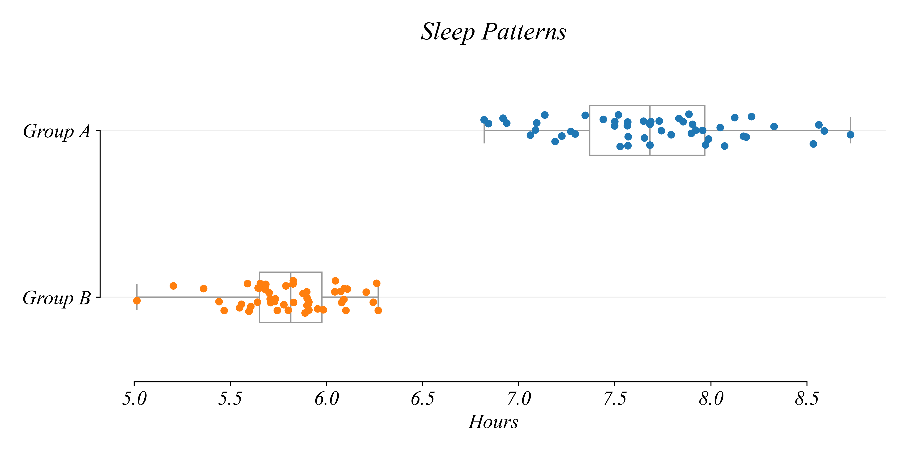
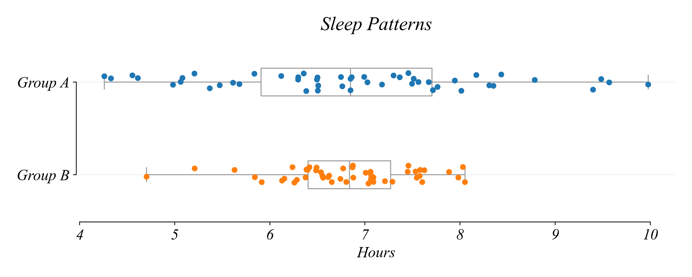
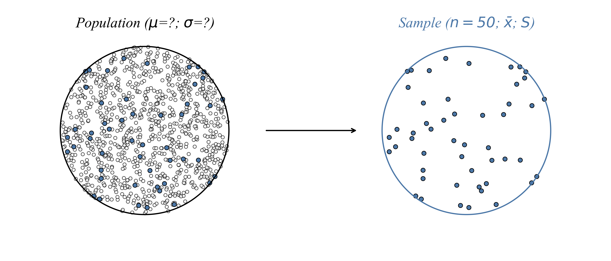
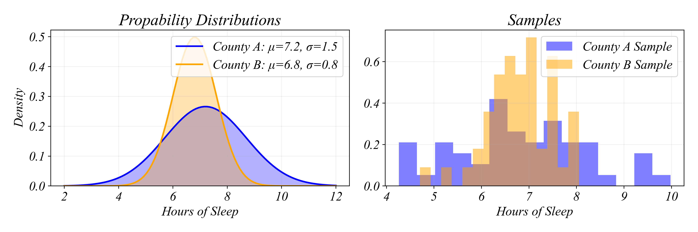
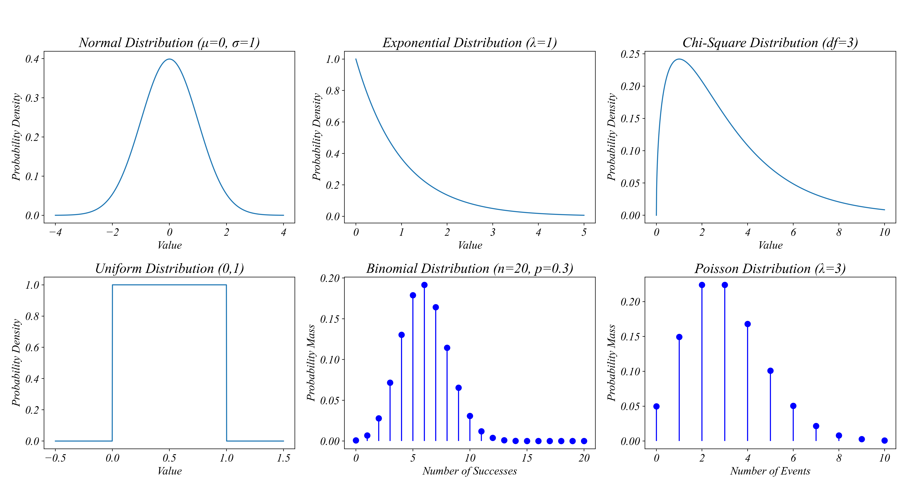
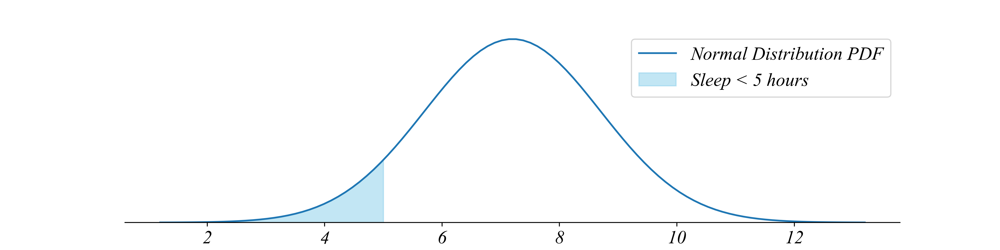
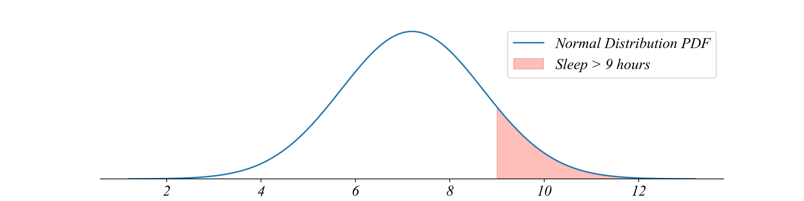
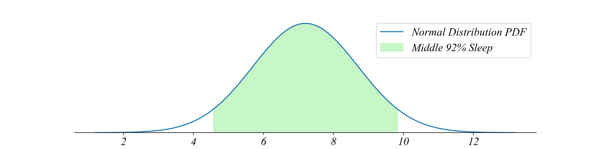

Group A mean: 7.14 hours
Group B mean: 6.98 hoursECON 0150 | Economic Data Analysis
The economist’s data analysis skillset.
Part 3.1 | Data vs the Population
Inferences From Data
What can we infer about those not in our data?
- We’ve mastered summarizing data
- But often we want to say something about the population, not just our data
Data Question 1: Sleep Time in Two Samples
Which group sleeps longer?
> everyone in Group A sleeps longer than anyone in Group B
Data Question 2: Sleep Time in Two Samples
Which group sleeps longer?

> these distributions overlap… lets compare them more precisely
Measures of Location
Where is the “center” of each group?
Mean: The average value \[\bar{x} = \frac{x_1 + x_2 + ... x_N}{N}\]
Measures of Location
Where is the “center” of each group?
Mean: The average value \[\bar{x} = \frac{1}{n}\sum_{i=1}^{n} x_i\]
Data Question 2: Sleep Time in Two Samples
Which group sleeps longer?
Group A mean: 7.14 hours
Group B mean: 6.98 hours> group A sleeps longer on average
> but some in Group B sleep longer than most in Group A!
Measures of Dispersion
How spread out is the data?
Range: difference between the largest and smallest value in the data
- Simple but doesn’t respond to changes near the middle of the distribution
Measures of Dispersion
How spread out is the data?
Mean Deviation: difference between each value and the average
\[ \sum \frac{x_i - \bar{x}}{n}\]
- Simple but the average of the difference is zero…
Measures of Dispersion
How spread out is the data?
Mean Absolute Deviation: absolute value of the difference from the average
\[ \sum \frac{|x_i - \bar{x}|}{n}\]
- The mean isn’t zero
- A little more complex and isn’t so nice mathematically
Measures of Dispersion
How spread out is the data?
Variance: average squared difference from the mean
\[ Var_X = \sum \frac{(x_i - \bar{x})^2}{n}\]
- Treats negatives appropriately
- The mean isn’t zero
- Mathematically nice
- Units are uninformative
Measures of Dispersion
How spread out is the data?
Standard Deviation: A measure of spread \[S_X = \sqrt{\sum \frac{(x_i - \bar{x})^2}{n}}\]
- Treats negatives appropriately
- The mean isn’t zero
- Mathematically nice
- Units are roughly average deviation from the mean
Measures of Dispersion
How spread out is the data?
Standard Deviation: A measure of spread \[S_X = \sqrt{\sum \frac{(x_i - \bar{x})^2}{n}}\]
Group A std dev: 1.50 hours
Group B std dev: 0.78 hours> Group A has more variability - some sleep much less, some much more
Sample vs Population
Both groups are 50 people selected from two different counties.
Old question: “Which group sleeps longer?” (about the data)
New question: “Which county sleeps longer?” (about the population)
Sample vs Population
The data is a sample drawn from a population.
Sample vs Population
We observe samples but want to understand populations.
- Data: 50 individuals we happened to sample from both counties
- Population: All people who could live in these counties
- Even if we surveyed everyone today, tomorrow would bring new residents
- The population is a theoretical concept - an infinite pool of possibilities
Sample vs Population
What is data? A sample.
Random Variable: a random process about a population
- the random variable is like a deck of cards
Probability (Mass/Density) Function: a function that assigns probabilities to each possible outcome
- the probability function is like which cards are in the deck
Observation: a realization of a random variable . . .
- the observation is the card you drew
Sample: a collection of observations
- the sample is the record of cards you’ve drawn
Data is a Sample
A random variable generates our data.
Random Variable: a random process about a population
Probability Function: a function that assigns probabilities to each possibility

> data is a sample drawn from a random variable
Probability Functions
Random variables can have many kinds of probability functions.
Exercise 3.1 | Known Distribution
We can answer many kinds of probability questions when we know the distribution.
County A’s probability function:
\[x_i \sim N(μ=7.2, σ=1.5)\]
- What proportion of the population sleeps less than 5 hours?

Exercise 3.1 | Known Distribution
We can answer many kinds of probability questions when we know the distribution.
County A’s probability function:
\[x_i \sim N(μ=7.2, σ=1.5)\]
- What proportion of the population sleeps more than 9 hours?

Exercise 3.1 | Known Distribution
We can answer many kinds of probability questions when we know the distribution.
County A’s probability function:
\[x_i \sim N(μ=7.2, σ=1.5)\]
- How much sleep does the middle 92% of the population get?

Unknown Distributions
What can we say about an unknown population if all see see is the sample?
What we observe:
- Sample size: \(n = 50\)
- Sample mean: \(\bar{x} = 7.24\) hours
- Sample standard deviation: \(s = 1.48\) hours
What we want to know:
- Population mean: \(\mu = ?\)
- Population standard deviation: \(\sigma = ?\)
- Population distribution: \(f(x) = ?\)
Unknown Distributions
What can we say about an unknown population if all see see is the sample?
The sample statistics (\(\bar{x}, S\)) are not the population parameters (\(\mu, \sigma\)).
\[\bar{x} \neq \mu\] \[s \neq \sigma\]
The Central Question
What can we say about an unknown population if all see see is the sample?
- Part 3.2 | Central Limit Theorem - the distribution of the sample mean
- Part 3.3 | Confidence Intervals - the closeness of the sample mean to the truth
- Part 3.4 | Hypothesis Testing - the probability we are wrong
> we can answer questions about an unknown population using just a sample